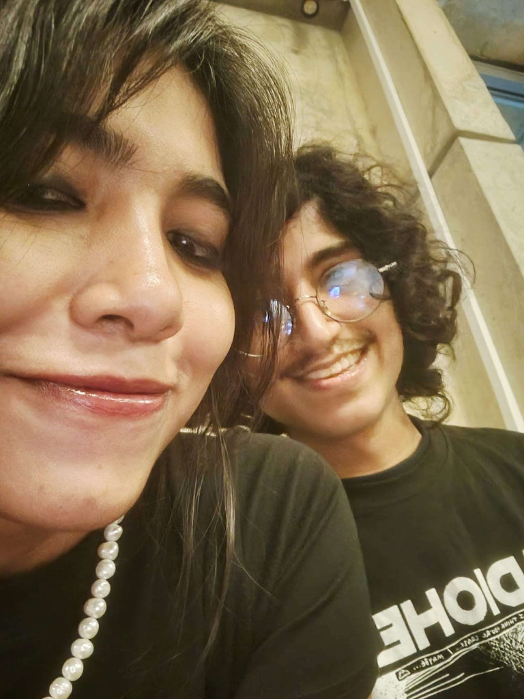

LNN – Love News Network
LIVE
BREAKING NEWS

Prime Suspect: Sinthia
Breaking: Large-scale heart theft
LATEST
BREAKING: Heart theft confirmed. Suspect remains dangerously adorable. • DEVELOPING: Victim refuses to press charges. • ALERT: Stolen heart unlikely to be returned. • AUTHORITIES: No intention of recovery. •